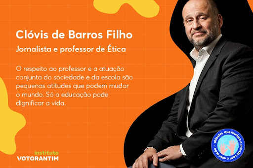

Voltar
Clóvis de Barros Filho
Clóvis de Barros filho é um jornalista e professor livre-docente na área de Ética da Escola de Comunicações e
Artes da Universidade de São Paulo (ECA-USP).

Espaço Ética
Melhores livros:
- A vida que vale a pena ser vivida
- Em busca de nós mesmos
- Ética e vergonha na cara!